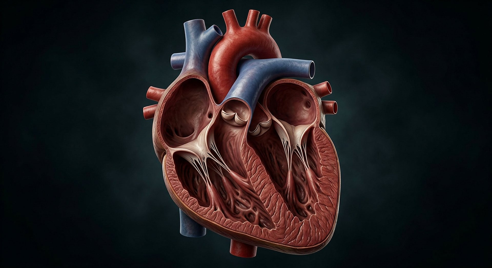
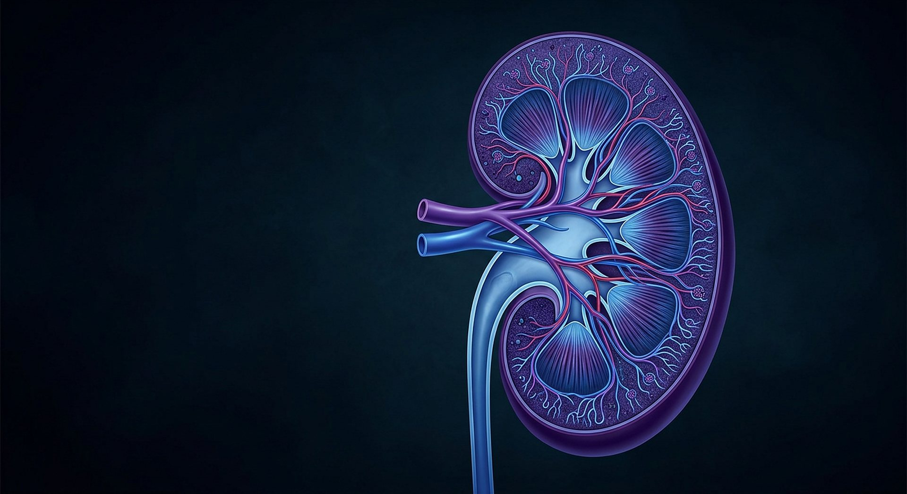

Votre cœur bat environ 100 000 fois par jour. Vos reins filtrent 180 litres de liquide quotidiennement. Et aucun de ces organes ne fonctionne seul.
Faits établisPoints débattusRéflexion signalée
Aucun organe ne travaille seul : le corps est une dépendance organisée.
Crédit : Illustration générée pour CREATIO · Licence : Usage interne au site
Cette salle décrit cinq organes et une propriété générale du corps — le renouvellement des tissus — en donnant des valeurs mesurées et en corrigeant plusieurs chiffres spectaculaires qui circulent partout. Elle ne donne aucun conseil médical : c’est un musée, pas une consultation.
Textes bibliques cités
« Tu m’as tissé dans le ventre de ma mère. »
Psaume 139:13
Le verbe est celui de la couture : un travail patient, ordonné, qui se poursuit jour après jour.
« Tes mains m’ont façonné et m’ont fait tout entier. »
Job 10:8
L’image de l’argile travaillée, avant toute connaissance de la physiologie.
« Si un seul membre souffre, tous les autres membres souffrent avec lui. »
1 Corinthiens 12:26
Une observation sur la solidarité du corps — que la physiologie confirme organe par organe.
M1
Une pompe qui ne s’arrête jamais
Au repos, le cœur bat environ 100 000 fois par jour et propulse près de 7 000 litres de sang. Il ne s’arrête ni la nuit, ni pendant la fièvre, ni pendant un effort — et il se répare en travaillant.

Cent mille battements par jour, près de sept mille litres propulsés.
Crédit : Illustration générée pour CREATIO · Licence : Usage interne au site
≈ 100 000battements par jour au repos (≈ 7 000 litres)
Le cœur humain bat environ 100 000 fois par jour au repos et propulse près de 7 000 litres de sang quotidiennement.
Une pompe qui ne s’arrête jamais, y compris pendant le sommeil, et dont le débit s’adapte à la demande en quelques secondes.
Nuance
Ces valeurs dérivent d’une fréquence de repos d’environ 70 battements par minute. Elles **varient beaucoup** selon l’activité, l’âge et l’individu : ce sont des ordres de grandeur, pas des constantes.
M2
Cent quatre-vingts litres filtrés, chaque jour
Les reins filtrent environ 180 litres de liquide par jour — plus de cent fois le volume du sang — avec un débit de filtration d’environ 125 mL par minute. L’essentiel est réabsorbé, et seuls 1 à 2 litres sont éliminés.

Cent quatre-vingts litres filtrés par jour, et presque tout récupéré.
Crédit : Illustration générée pour CREATIO · Licence : Usage interne au site
≈ 180litres de liquide filtrés par jour (≈ 125 mL/min)
Les reins filtrent environ 180 litres par jour à un débit glomérulaire d’environ 125 mL/min, puis réabsorbent la quasi-totalité.
Tout le volume du sang, tamisé plus de cent fois par jour, puis presque entièrement récupéré.
Nuance
Environ 150 litres par jour chez la femme ; la valeur dépend de la masse corporelle. Là encore, un ordre de grandeur exactement daté vaut mieux qu’un chiffre rond présenté comme universel.
M3
Cent millions de capteurs par œil
La rétine humaine contient en moyenne 4,6 millions de cônes et 92 millions de bâtonnets — soit environ cent millions de capteurs par œil. Les cônes, concentrés au centre, donnent la couleur ; les bâtonnets, partout ailleurs, captent la lumière faible et le mouvement.
Quatre millions et demi de cônes, quatre-vingt-douze millions de bâtonnets — par œil.
Crédit : Illustration générée pour CREATIO · Licence : Usage interne au site
4,6 M + 92 Mcônes et bâtonnets par rétine
Chaque rétine compte en moyenne 4,6 millions de cônes et 92 millions de bâtonnets, répartis très inégalement entre le centre et la périphérie.
Cent millions de capteurs par œil, dont la répartition n’est pas uniforme : la couleur au centre, le mouvement autour.
Nuance
Les chiffres populaires — « 120 millions de bâtonnets, 6 à 7 millions de cônes » — sont **inexacts**. La salle donne les valeurs mesurées sur des rétines entières (Curcio 1990), et signale la correction.
M4
Le mythe du « court de tennis »
On lit partout que les alvéoles pulmonaires déploient la surface d’un court de tennis. C’est une belle image ; les estimations publiées vont en réalité d’environ 24 à 180 m² selon la méthode de mesure employée. Ce qui est certain : la membrane d’échange est très fine, de l’ordre du micromètre.
24 à 180mètres carrés de surface alvéolaire estimée selon la méthode
La surface d’échange alvéolaire est souvent résumée par la métaphore du court de tennis ; les estimations publiées s’étendent d’environ 24 à 180 m².
Une image frappante — et complètement dépendante de la façon de mesurer une surface pliée.
Nuance
La salle préfère la **fourchette** à la métaphore. La métaphore n’est pas fausse : elle est incontrôlable. Un musée qui vise l’exactitude donne les deux bords et la méthode.
M5
Un corps qui se reconstruit
Le corps renouvelle ses tissus en permanence : cellules sanguines, peau, paroi intestinale, à des rythmes très différents et sans interruption. Un bâtiment qui remplacerait ses briques chaque jour sans jamais cesser de fonctionner.
continurenouvellement cellulaire (rythmes très variables selon les tissus)
Les tissus humains se renouvellent continuellement, à des rythmes qui vont de quelques jours à plusieurs années selon le type cellulaire.
Un chantier permanent, invisible, qui n’interrompt jamais l’activité du bâtiment.
Nuance
Aucun chiffre unique n’est donné : les durées de vie cellulaires varient d’un facteur cent. Dire « toutes vos cellules changent tous les sept ans » est faux, et le musée ne le publie pas.
Ce que la science dit honnêtement
Les limites, dites franchement
Trois chiffres spectaculaires, vérifiés un par un
La surface alvéolaire (24 à 180 m²), le nombre de photorécepteurs (corrigé), le volume filtré par les reins (qui suppose un débit précis). Chacun est donné avec son origine, et aucun n’est arrondi pour faire plus d’effet.
Aucun chiffre sur la longueur totale des vaisseaux sanguins
Les estimations varient énormément et aucun comptage n’existe. Le musée ne l’utilise pas — et le dit, plutôt que de laisser croire à un oubli.
L’analogie de la machine a des limites
Le corps se répare, apprend, vieillit, dépend d’un environnement et d’autres personnes. Il n’est pas « conçu comme » une machine : il est décrit *par* des métaphores mécaniques, ce qui n’est pas la même chose.
Réflexion — et non mesure
Lecture proposée
Un organe seul ne vit pas. Le cœur a besoin des reins, les reins du sang, le sang de l’os qui le fabrique, l’os des muscles qui le chargent, et tout cela a besoin d’air, d’eau et de nourriture venus du dehors. Cette dépendance mutuelle est peut-être ce qui frappe le plus : aucune partie n’est autonome, et pourtant l’ensemble travaille sans interruption pendant des décennies. « Tu m’as tissé dans le ventre de ma mère » : le verbe est celui de la couture, un travail patient et ordonné. Le musée propose cette lecture comme une méditation. Les chiffres de la salle, eux, sont des chiffres mesurés, et quand ils sont incertains — la surface alvéolaire, le renouvellement des tissus — il le dit sans détour.
« Je te louerai de ce que, de façon redoutable, je suis fait d’une manière admirable. »
Psaume 139:14
Questions honnêtes
Les objections, prises au sérieux
« Le corps est-il “parfait” ? »
Non. Il connaît l’usure, la maladie, les défauts génétiques, la souffrance. Cette salle ne masque rien : elle décrit des mécanismes remarquables dans un corps qui, par ailleurs, peut tomber malade. L’admiration n’exige pas l’aveuglement.
« Pourquoi la Bible parle-t-elle du cœur comme du siège des pensées ? »
Parce que c’est un langage imagé, courant dans l’Antiquité. Le musée ne s’appuie pas dessus pour faire de la physiologie, et ne confond jamais une image ancienne avec une description anatomique.
« Quels chiffres ne citez-vous pas ? »
La longueur totale des vaisseaux sanguins, le nombre de cellules produites « par seconde », la surface intestinale : trop variables ou insuffisamment sourcés. Le musée s’abstient, et l’écrit.
« Et le cerveau ? »
Il a sa propre salle, la suivante, pour ne pas le traiter en accessoire. Un organe de 1,4 kg qui consomme environ 20 % de l’énergie du corps mérite mieux qu’un paragraphe.
Ce que l’on pourra manipuler
Interactions de la salle
Chaque interaction possède un repli lisible sans JavaScript.
Interaction
Contenu
Repli
Cœur battant
Le cycle cardiaque animé, avec une fréquence réglable de 50 à 150 battements par minute : le compteur de litres propulsés en une journée se recalcule en direct.
Tableau fréquence / litres par jour pour trois réglages (50, 70, 150 par minute), avec la source.
Filtre rénal
Un débit de 125 mL par minute visualisé ; le visiteur « réabsorbe » et voit la quantité finale, de 1 à 2 litres. Tous les chiffres affichés portent leur source.
Le calcul en trois lignes : 125 mL/min, 180 L/jour, 1-2 L éliminés.
Œil et rétine
Une image, puis une carte de densité des cônes et des bâtonnets : au centre la couleur, en périphérie le mouvement. Le visiteur compare deux zones de son propre champ visuel.
Les densités et leur répartition, en chiffres, avec la référence de 1990.
Démontage d’un chiffre
Trois affirmations spectaculaires — surface alvéolaire, longueur des vaisseaux, nombre de cônes — à classer « mesuré / variable / non vérifié ». La correction est sourcée, y compris quand la conclusion est « on ne peut pas chiffrer ».
Les trois affirmations et leur statut, en toutes lettres, avec les références.
Aile VIII · Le Cabinet des merveilles
Aller plus loin : les fiches du Cabinet
Cette salle donne l’essentiel. Le Cabinet reprend chaque mécanisme avec sa source primaire,
son chiffre daté et sa question honnête.
Le lait maternel n’est pas un aliment, c’est un système : il nourrit l’enfant, alimente des bactéries choisies, transmet des anticorps et change de composition au fil des semaines.
Une coupure de plusieurs centimètres se referme : le sang coagule, des cellules nettoient, d’autres reconstruisent, puis le tissu se réorganise pendant des mois.